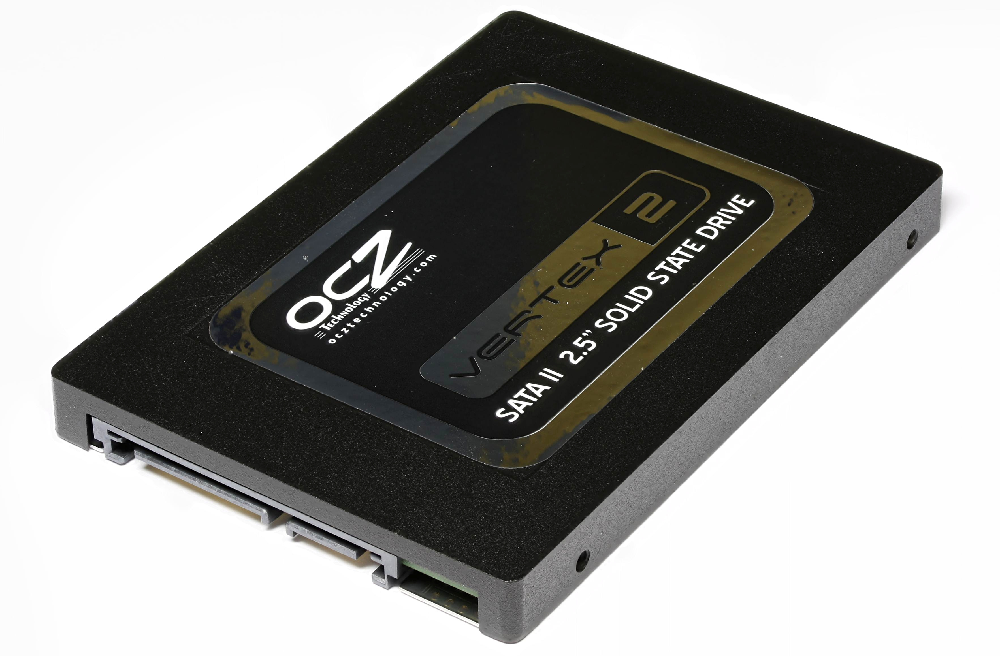
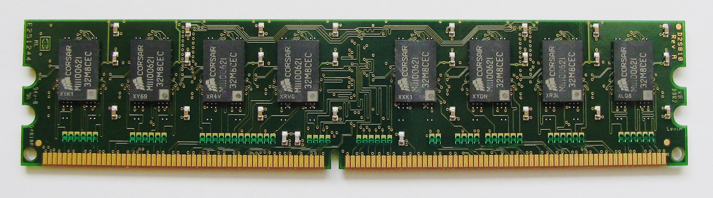

Modèle d'architecture de Von Neumann¶
Les ordinateurs tels que nous les connaissons aujourd'hui sont parfaitement intégrés à notre quotidien, si bien qu'il peut être difficile d'imaginer tout le cheminement qu'il a été nécessaire de faire pour en arriver là.
Les premiers "vrais" ordinateurs apparaissent aux États-Unis et en Angleterre, juste après la guerre. Il s'agit de machines capables d’exécuter des programmes. Mais qu'est-ce qu'un programme, d'abord ?
Un programme, c'est un algorithme ET des données. Les deux sont intimement liés, et doivent être stockés dans une mémoire.
Introduction : Histoire des ordinateurs¶
Avant d'en arriver à nos ordinateurs modernes, de nombreuses machines ont été réalisées depuis l'Antiquité pour effectuer des calculs.
Visionnez la petit vidéo suivante sur l'histoire de l'architecture des ordinateurs :
Exercice 1
En vous basant sur la partie de la vidéo ci-dessus, répondez aux questions suivantes :
- Comment étaient transmis les programmes avec l’ENIAC ?
- Reproduire le schéma de l’architecture de Von Neumann présenté dans la video.
- Quel était le composant fondamental des premiers ordinateurs (ENIAC, EDVAC) ? Quels étaient ses inconvénients ? Quel composant l’a remplacé dans les années 1950 et est encore utilisé dans les ordinateurs modernes ?
- Commenter le tableau ci-dessous.

- Qu’appelle-t-on System On a Chip ?
Correction exercice 1
- L'ENIAC (Electronic Numerical Integrator and Computer), l'un des premiers ordinateurs électroniques, a été programmé en utilisant des panneaux de connexion et des interrupteurs. Les instructions et les données étaient saisies manuellement par les opérateurs en connectant des câbles et en positionnant les interrupteurs, ce qui était un processus laborieux et propice aux erreurs.
- Voir la suite de ce cours.
- Le composant fondamental des premiers ordinateurs tels que l'ENIAC et l'EDVAC était le tube à vide, également appelé tube électronique ou lampe à vide. Les tubes à vide étaient utilisés comme éléments de commutation et de stockage d'informations binaires. Cependant, ils présentaient des inconvénients tels que leur taille, leur consommation d'énergie élevée, leur production de chaleur importante et leur propension à défaillir.
Les tubes à vide ont été largement remplacés dans les années 1950 par les transistors, qui sont beaucoup plus compacts, plus fiables, plus robustes et consomment moins d'énergie. Cette transition a marqué le début de l'ère des ordinateurs à transistors. Les transistors sont toujours utilisés dans les ordinateurs modernes, mais ils sont intégrés à une échelle beaucoup plus petite grâce à la miniaturisation des composants électroniques. - On constate qu'au fil du temps, le nombre de transistor a considérablement augmenté, et que la surface nécessaire par transistor a fortement diminuée.
- Le terme "System On a Chip" (SoC) désigne un concept où tous les composants nécessaires pour exécuter un système complet sont intégrés sur une seule puce. Cela inclut le processeur central (CPU), la mémoire, les interfaces d'entrée/sortie, et parfois même des composants spécialisés. Les SoC sont largement utilisés dans les dispositifs électroniques modernes tels que les smartphones, les tablettes, et d'autres appareils intégrés comme les Raspberry, offrant une solution compacte et économe en énergie.
Résumé historique
Machines de l'Antiquité :
- Anticythère (150-100 av. J.-C.) : Un ancien mécanisme qui a servi à effectuer des calculs astronomiques, représentant une première utilisation de la mécanique pour le traitement de l'information.
- Odomètre de Héron d'Alexandrie (10-70 apr. J.-C.) : Un dispositif antique pour mesurer les distances, montrant une application précoce de la technologie à des besoins pratiques.
17e siècle :
- Pascaline (1642) : Inventée par Blaise Pascal, la Pascaline est une calculatrice mécanique précoce, symbolisant les premiers efforts pour automatiser les calculs.
19e siècle :
- Machine analytique de Babbage (conçue dans les années 1830) : Conception révolutionnaire préfigurant les ordinateurs programmables, même si elle n'a jamais été construite de son vivant, car trop coûteuse. On estime aujourd'hui que la machine complète aurait constitué un enchevêtrement de roues et d'engrenages mus par la vapeur et occupant la place d'une locomotive.
Analyse de Charles Babbage et Ada Lovelace :
- Ada Lovelace (1843) : Pionnière dans la programmation informatique, Ada Lovelace a créé le premier programme pour la machine analytique, jetant les bases de la programmation. Voici une petite vidéo intéressante sur le sujet.
20e siècle :
-
"A Symbolic Analysis of Relay and Switching Circuits" de Shannon (1937) : Le travail de Claude Shannon a établi les fondements de la théorie des circuits logiques, essentielle à la conception des premiers ordinateurs.
-
ENIAC (1946) : Le premier ordinateur électronique à grande échelle, l'ENIAC, a marqué le passage des calculateurs mécaniques aux machines électroniques programmables.
-
"First Draft of a Report on the EDVAC" de Von Neumann (1945) : Le document de Von Neumann a introduit le concept d'architecture von Neumann, standard pour la conception des ordinateurs modernes. Il s'est basé sur les travaux d'Alan Turing (en 1936), notamment des concepts suivants :
- Machine de Turing : Turing a proposé un modèle abstrait de machine, connu sous le nom de machine de Turing, qui fonctionne selon des règles simples et manipule des symboles sur une bande infinie. Cette machine hypothétique possède une tête de lecture/écriture mobile qui peut se déplacer vers la gauche ou la droite et changer l'état de la machine en fonction des symboles lus. Voici une petite vidéo du CNRS sur le sujet, que je vous invite à visionner. Voici également un simulateur de machine de Turing permettant de mieux comprendre son fonctionnement.
- Universalité : Turing a démontré qu'il était possible de construire une machine de Turing universelle, capable de simuler n'importe quelle autre machine de Turing. Cette idée d'universalité signifie que, en principe, une seule machine pourrait exécuter n'importe quel programme, établissant ainsi le concept de programmabilité et d'instructions stockées.
Développements clés dans les composants électroniques :
-
Transistor (1947) : L'invention du transistor a révolutionné l'électronique, remplaçant les tubes à vide et permettant la miniaturisation des composants.
-
Circuit intégré (1958) : Les circuits intégrés ont consolidé de multiples composants sur une seule puce, accélérant les calculs et réduisant la taille des ordinateurs.
-
MOS Transistor (1960) : Le transistor MOS a ouvert la voie aux circuits intégrés à faible consommation d'énergie, crucial pour les appareils portables et les microprocesseurs modernes.
Évolution des composants électroniques :
-
7400 - Texas Instruments (1964) : La série 7400 de circuits intégrés logiques a facilité la construction de systèmes électroniques plus complexes.
-
4004 - Intel (1971) : Le premier microprocesseur, le 4004, a introduit l'idée d'un processeur complet sur une seule puce, marquant le début de l'ère des ordinateurs personnels.
-
Power4 - IBM (2001) : L'architecture avancée de Power4 a ouvert la voie aux serveurs hautes performances et aux superordinateurs.
-
Snapdragon 855 - Qualcomm (2018) : La puce mobile Snapdragon 855 a défini de nouveaux standards pour les performances des appareils mobiles et l'intégration de technologies avancées.
Architecture moderne :
-
Carte mère (1980s) : La carte mère est devenue le socle central d'un ordinateur, connectant tous les composants et permettant une évolutivité aisée.
-
Raspberry Pi (2012) : La sortie du Raspberry Pi a rendu les ordinateurs accessibles à un public plus large grâce à son faible coût et à sa polyvalence pour les projets informatiques.
Le modèle de Von Neumann¶
Présentation¶
Le modèle d'architecture de Von Neumann, fondamental dans la conception des ordinateurs modernes, tire ses origines des travaux novateurs d'Alan Turing sur les machines universelles.
Développé dans les années 1940 par le mathématicien et physicien John von Neumann, ce modèle a été influencé par les idées de Turing concernant les machines universelles de calcul.
L'architecture de Von Neumann repose sur le concept de programme stocké, où les instructions et les données sont traitées de la même manière et sont toutes deux stockées dans la mémoire de l'ordinateur. Cela contraste avec les premières machines, où les programmes étaient câblés physiquement. L'introduction de cette architecture a considérablement simplifié le processus de programmation, permettant aux programmeurs de manipuler les instructions comme des données.
Le modèle de Von Neumann a donc joué un rôle crucial dans l'évolution des ordinateurs en les rendant plus flexibles, programmables et capables d'exécuter une variété de tâches en fonction des instructions fournies, contribuant ainsi de manière significative à l'essor de l'informatique moderne.
MBR (memory buffer register) contient les données / instructions à être stockées / lues, on l'appelle aussi MDR : memory data register.
MAR (memory adress register) : registre contenant l'adresse de la mémoire où sera stocké la donnée.
Voir une version plus détaillée du modèle de Von Neumann
Modèle de Von Neumann
Un ordinateur est une machine programmable, automatique et universelle :
- programmable : la séquence d’opérations exécutée par un ordinateur peut être entièrement spécifiée dans le texte d’un programme ;
- automatique : un ordinateur peut exécuter un programme sans intervention extérieure (câblage . . .) ;
- universelle : un ordinateur peut exécuter tout programme calculable (selon la théorie de Turing) avec le jeu d’instructions câblé dans son processeur.
En 1945, John von Neumann, mathématicien hongrois exilé aux États-Unis, publie un rapport sur la réalisation du calculateur EDVAC où il propose une architecture permettant d’implémenter une machine universelle, décrite par Alan Turing dans son article fondateur de 1936 sur le problème de l’indécidabilité.
L’architecture de Von Neumann va servir de modèle pour la plupart des ordinateurs de 1945 jusqu’à nos jours, elle se compose de quatre parties distinctes :
- L’Unité Centrale de Traitement (Central Processing Unit en anglais) ou Processeur, qui permet d'exécuter les instructions machine des programmes informatiques, est constituée de deux sous-unités :
- L’Unité de Commande (UC) charge la prochaine instruction dont l’adresse mémoire se trouve dans un registre appelé Compteur de Programme (PC en anglais) ou Compteur ordinal, la décode avec le décodeur et commande l’exécution par l’ALU avec le séquenceur. L’instruction en cours d’exécution est chargée dans le Registre d’Instruction (IR). L’Unité de Commande peut aussi effectuer une opération de branchement, un saut dans le programme, en modifiant le Compteur de Programme, qui par défaut est incrémenté de 1 lors de chaque instruction.
- L’Unité Arithmétique et Logique (ALU en anglais) qui réalise des opérations arithmétiques (addition, multiplication...), logiques (et, ou...), de comparaisons ou de déplacement de mémoire (copie de ou vers la mémoire). L’ALU stocke les données dans des mémoires d’accès très rapide appelées registres. Les opérations sont réalisées par des circuits logiques constituant le jeu d’instructions du processeur.
- La mémoire où sont stockés les données et les programmes.
Il y a différents types de mémoires : la mémoire volatile (RAM par exemple), la mémoire permanente (disque dur par exemple). - Des bus qui sont des fils reliant le CPU et la mémoire et permettant les échanges de données et d’adresses. Les adresses, les données et les commandes circulent par des bus d'adresse, des bus de données et le bus de contrôle. Un bus ne peut être utilisé que par deux composants (émetteur/récepteur) à la fois !
- Des dispositifs d’entrées/sorties permettant d’échanger avec l’extérieur (lecture ou écriture de données).
Dans le modèle de Von Neumann, le processeur exécute une instruction à la fois, de façon séquentielle.
Cycle d'instruction
Le cycle d’une instruction est constitué d’un cycle de recherche puis d’un cycle d’exécution qui mettent en jeu des échanges entre la mémoire et l’Unité Centrale de Traitement (qui contient l'ALU et les registres), synchronisés par des signaux périodiques émis par une horloge à quartz. Chaque cycle peut couvrir plusieurs cycles d’horloge.
Le cycle d'instruction dans une architecture de Von Neumann suit généralement ces étapes :
- Fetch (Chargement) : L'unité de contrôle (Control Unit) extrait l'instruction depuis la mémoire principale (RAM) à l'adresse spécifiée par le compteur de programme (Program Counter, registre PC), puis la stocke dans le registre d'instruction.
- Decode (Décodage) : L'unité de contrôle interprète l'instruction extraite pour comprendre quelle opération doit être effectuée et sur quelles données.
- Execute (Exécution) : L'unité de traitement (ALU - Arithmetic Logic Unit) effectue l'opération demandée, que ce soit une opération arithmétique, logique ou de transfert de données.
- Write Back (Écriture) : Les résultats de l'opération peuvent être stockés dans un registre ou dans la mémoire, en fonction de l'instruction.
- Increment (Incrémentation) : Le compteur de programme (registre PC) est généralement incrémenté pour pointer vers l'instruction suivante.
Ce cycle se répète continuellement, traitant chaque instruction séquentiellement. Chaque étape du cycle est synchronisée par l'horloge du système. L'architecture de Von Neumann permet à l'ordinateur de charger des instructions depuis la mémoire, de les décoder, de les exécuter et d'écrire les résultats, suivant ainsi un modèle séquentiel. Cette architecture est fondamentale dans la conception des processeurs modernes.
Registres PC et IR
Le compteur de programme (PC pour Program counter) contient en permanence l'adresse de la prochaine instruction à exécuter.
À chaque début de cycle d'exécution, l'instruction à exécuter est chargée dans le registre IR à partir de l'adresse contenue dans le registre PC.
Ensuite, le registre PC est incrémenté pour pointer sur l'instruction suivante.
Le registre d'instruction (IR) contient l'instruction en cours d'exécution.
Ce registre est chargé au début du cycle d'exécution par l'instruction dont l'adresse est donnée par le compteur de programme PC.
La mémoire¶
La mémoire joue un rôle essentiel dans le stockage de données et de programmes. Elle se subdivise en deux catégories distinctes :
- La mémoire volatile, qui héberge les programmes et les données en cours d'utilisation (on parle de processus pour les programmes en cours d'utilisation). Cette mémoire perd son contenu dès qu'elle n'est plus alimentée en énergie.
- La mémoire permanente, qui renferme les programmes et les données fondamentaux de la machine. Contrairement à la mémoire volatile, cette mémoire conserve son contenu même en cas de mise hors tension.
La plupart des mémoires organisent les informations par adresses, chaque octet étant accessible via une adresse unique.
Pour des considérations économiques, les mémoires sont généralement regroupées en plusieurs catégories distinctes.
Une mémoire de masse ou mémoire de stockage¶


Elle permet de stocker à long terme des grandes quantités d’informations. Les technologies les plus courantes de mémoires de masse sont électromécaniques (disques durs – HDD) ou à semi-conducteurs (SSD, clefs USB, …), elles visent à obtenir une capacité de stockage élevée à faible coût et ont généralement une vitesse inférieure aux autres mémoires.
ordres de grandeur :
- capacité : jusqu’à 10 To (HDD)
- vitesse : jusqu’à 500 Mo/s (SSD)
La mémoire vive, ou RAM¶

La mémoire vive, également connue sous le nom de RAM (Random Access Memory), constitue l'espace principal de stockage du microprocesseur. Cependant, il s'agit d'une mémoire volatile, ce qui signifie que son contenu est perdu lorsque l'alimentation est coupée. Elle est nommée RAM en raison de son accès rapide aux données, indépendamment de leur emplacement.
Ordres de grandeur :
- Capacité : jusqu'à 32 Go
- Vitesse : jusqu'à 2 Go/s
Une mémoire cache¶
Explication de ce schéma
Mot :
- Le terme "mot" fait généralement référence à la plus petite unité de données que le processeur peut manipuler en une seule opération. La taille d'un mot peut varier en fonction de l'architecture du processeur, mais c'est souvent la taille des registres du processeur.
L1 et L2 :
- "L1" et "L2" font référence aux niveaux de mémoire cache dans la hiérarchie de mémoire d'un processeur.
- L1 (Level 1) : C'est la première couche de mémoire cache, généralement intégrée directement dans le processeur. Elle est de petite capacité, mais elle offre une très haute vitesse d'accès. Le terme "ligne" entre "CPU" et "L1" pourrait indiquer le flux direct de données entre le processeur (CPU) et la mémoire cache de niveau 1.
- L2 (Level 2) : C'est la deuxième couche de mémoire cache, située généralement à proximité du processeur mais avec une capacité plus grande que la L1. La connexion entre L1 et L2 peut être représentée par le terme "ligne" et indique le transfert de données entre la mémoire cache de niveau 1 et la mémoire cache de niveau 2.
Bien que la RAM soit rapide, le microprocesseur l'est encore plus ! Pour éviter de limiter ses performances en le contraignant à attendre (connu sous le terme de goulot d'étranglement), on utilise des unités de mémoire plus petites, mais considérablement plus rapides, bien que plus coûteuses. Les différentes niveaux de mémoire cache servent à stocker temporairement des informations fréquemment consultées. Elles se distinguent par leur vitesse élevée et leur coût important pour une capacité de stockage limitée.
Ordres de grandeur :
- Capacité : quelques ko (L1) à quelques Mo (L2)
- Vitesse : jusqu'à 5 Go/s
Le registre de processeur¶
Intégré directement dans le processeur, le registre de processeur représente un type de mémoire extrêmement rapide mais également coûteux. En conséquence, il est réservé à une quantité très restreinte de données.
Ordres de grandeur :
- Capacité : quelques dizaines d'octets
- Vitesse : jusqu'à 30 Go/s
Les bus¶
Afin de faciliter la circulation des données entre les divers composants d'un ordinateur tels que la mémoire, le CPU et les entrées/sorties, des systèmes de communication appelés bus sont utilisés. Ces bus se déclinent en trois catégories principales :
- Le bus d'adresse a pour fonction de transmettre des adresses, telles que l'adresse d'une donnée à extraire de la mémoire.
- Le bus de données est dédié à la transmission des données elles-mêmes.
- Le bus de contrôle a pour rôle de définir le type d'action à entreprendre, par exemple, l'écriture ou la lecture d'une donnée en mémoire.

Un petit QCM¶
QCM d'entraînement
Qu'est-ce qui caractérise l'architecture de Von Neumann ?
- La présence d'une unité arithmétique et logique (UAL)
- La séparation de la mémoire et du processeur
- L'utilisation exclusive de la mémoire permanente
Quelle est la fonction principale de l'unité de commande dans l'architecture de Von Neumann ?
- Effectuer des opérations arithmétiques
- Contrôler le flux d'instructions
- Stocker des données à long terme
Quel composant est responsable de l'exécution des opérations arithmétiques dans un ordinateur de type Von Neumann ?
- Unité de commande
- Unité arithmétique et logique (UAL)
- Mémoire vive (RAM)
Quelle est la caractéristique principale de la mémoire volatile dans l'architecture de Von Neumann ?
- Elle conserve son contenu après la mise hors tension.
- Elle est utilisée pour le stockage à long terme.
- Son contenu est perdu lorsqu'elle n'est plus alimentée.
Quel est le rôle du bus d'adresse dans un système Von Neumann ?
- Faire circuler des adresses vers la mémoire
- Faire circuler des données
- Contrôler le type d'action à effectuer
Pourquoi utilise-t-on des mémoires caches dans l'architecture de Von Neumann ?
- Pour augmenter la capacité de stockage
- Pour accélérer l'accès aux données fréquemment utilisées
- Pour réduire le coût global du système
Qu'est-ce qui caractérise la mémoire permanente dans l'architecture de Von Neumann ?
- Sa volatilité
- Sa capacité à stocker des données de manière permanente
- Sa vitesse élevée d'accès aux données
Quel est le rôle du registre de processeur dans l'architecture de Von Neumann ?
- Stocker des données de manière permanente
- Effectuer des opérations arithmétiques
- Stocker temporairement des données pour un accès rapide
Quelle est la base du langage machine utilisé dans l'architecture de Von Neumann ?
- Base 8 (octal)
- Base 10 (décimale)
- Base 2 (binaire)
Qui est considéré comme le père de l'architecture de Von Neumann ?
- Alan Turing
- John von Neumann
- Charles Babbage
Organisation de la mémoire¶
Exercice - Organisation de la mémoire
Pour vérifier votre compréhension de l'organisation de la mémoire, vous pouvez réaliser les exercices 1 et 2 de la partie 1 du document suivant proposé par le lycée Louis Feuillade :
Instructions machine¶
Le transistor¶
Vous l'avez vu, le composant principal des circuits d'un ordinateur est le transistor.

Dans un ordinateur, les transistors agissent comme des interrupteurs, adoptant deux états fondamentaux :
- soit le transistor autorise le passage du courant électrique (interrupteur fermé),
- soit il le bloque (interrupteur ouvert).
Cette dichotomie constitue l'essence même du fonctionnement d'un transistor dans un ordinateur, ne laissant place qu'à deux états distincts : soit le courant circule (état "haut"), soit il ne circule pas (état "bas"). Ces états sont souvent représentés par les chiffres 1 et 0 respectivement.
Ainsi, le fonctionnement de l'ordinateur se résume à l'utilisation exclusive de deux chiffres, d'où la raison pour laquelle il opère en base 2 (système binaire) plutôt qu'en base 10, comme dans la vie quotidienne.
Le transistor joue un rôle central dans la construction des circuits logiques, qui permettent d'effectuer des opérations booléennes. Ces opérations sont directement liées à l'algèbre de Boole, développée par le mathématicien britannique George Boole au XIXe siècle.
Pour en savoir plus sur les circuits logiques, vous pouvez consulter ce cours.
Le langage machine¶
Le CPU se consacre exclusivement à la gestion de grandeurs booléennes, d'où le codage en binaire des instructions qu'il exécute. Le langage machine (langage dit de bas niveau) englobe l'ensemble des instructions directement exécutables par le microprocesseur. En opposition, les langages de programmation évolués (langages dits de haut niveau) tels que Python ou C++, conçus pour l'interaction humaine, présentent des instructions complexes opérant sur des types de données bien plus élaborés que les simples booléens.
Ainsi, une conversion du langage évolué vers le langage machine est nécessaire, où chaque instruction évoluée engendre plusieurs instructions élémentaires en langage machine. Cette transition peut se faire soit par compilation (pour l'ensemble du code, c'est le cas avec le langage C par exemple), soit par interprétation (au fur et à mesure du déroulement du code, c'est le cas avec le langage Python par exemple).
Instruction machine
Une instruction machine, essentiellement une chaîne binaire de 32 bits, se compose principalement de deux parties :

- le champ "code opération" spécifiant le type de traitement que le processeur doit réaliser (par exemple le code \(0010~0110\) donne l’ordre au CPU d’effectuer une multiplication),
- le champ "opérandes" indiquant la nature des données sur lesquelles l'opération désignée par le "code opération" doit s'appliquer.
Les instructions machines, qualifiées d'instructions de bas niveau, englobent :
- des opérations arithmétiques (addition, soustraction, multiplication).
Par exemple, on peut avoir une instruction qui ressemble à « additionne la valeur contenue dans le registre R1 et le nombre 789 et range le résultat dans le registre R0 ». - des transferts de données entre le CPU et la mémoire vive.
Par exemple, on peut avoir une instruction qui ressemble à « prendre la valeur située à l’adresse mémoire 487 et la placer dans la registre R2 » ou encore « prendre la valeur située dans le registre R1 et la placer à l’adresse mémoire 512 ». - des ruptures de séquence.
Par exemple : si l’instruction n°1 est située à l’adresse mémoire 343, l’instruction n°2 sera située à l’adresse mémoire 344, l’instruction n°3 sera située à l’adresse mémoire 345… Au cours de l’exécution d’un programme, le CPU passe d’une instruction à une autre en passant d’une adresse mémoire à l’adresse mémoire immédiatement supérieure :
Par exemple, après avoir exécuté l’instruction n°2 (situé à l’adresse mémoire 344), le CPU « va chercher » l’instruction suivante à l’adresse mémoire 344+1=345.
Les instructions de rupture de séquence d’exécution encore appelées instructions de saut ou de branchement permettent d’interrompre l’ordre initial sous certaines conditions en passant à une instruction située une adresse mémoire donnée.
Par exemple, dans le cas où à l’adresse mémoire 354 nous avons l’instruction suivante : « si la valeur contenue dans le registre R1 est strictement supérieure à 0 alors exécuter l’instruction située à l’adresse mémoire 4521 ».
Si la valeur contenue dans le registre R1 est strictement supérieure à 0 alors la prochaine instruction à exécuter est l’adresse mémoire 4521, dans le contraire, la prochaine instruction à exécuter est à l’adresse mémoire 355.
Les opérandes peuvent prendre la forme de valeurs immédiates, de registres du CPU, ou de données en mémoire vive.
Assembleur¶
L'assembleur facilite la lisibilité des instructions en remplaçant les mots binaires par des symboles mnémoniques.
Par exemple, l'instruction binaire suivante :
Il est à noter que chaque élément de l'instruction occupe une quantité de mémoire bien définie, par exemple, en architecture ARM :
- l'instruction ADD occupe les 12 bits de poids fort
- les adresses des registres R1 et R2 occupent chacune 4 bits
- l'opérande #125 occupe les 12 bits de poids faible.
Instructions de sauts
Le simulateur de CPU que nous utiliserons prend en charge les instructions de saut suivantes :
Vous pouvez faire un saut sans condition avec l'instruction :
B <label>: pour sauter directement à un label indiqué,
Vous pouvez faire un saut avec condition, après avoir exécuté une instruction de comparaison CMP :
BEQ <label>: sauter au label indiqué si les deux éléments comparés sont égaux (EQ = Equal),BNE <label>: sauter au label indiqué si les deux éléments comparés ne sont pas égaux (NE = Not Equal),BGT <label>: sauter au label indiqué si le premier élément est plus grand que le deuxième (GT = Greater Than),BLT <label>: sauter au label indiqué si le premier élément est plus petit que le deuxième (LT = Less Than).
Il existe également d'autres instructions conditionnelles, comme BGE (Greater or Equal = plus grand ou égal) ou BLE (Less or Equal = plus petit ou égal), mais celles-ci ne sont pas prises en charge dans ce simulateur.
Voici un exemple d'utilisation de sauts pour créer une boucle qui itère tant que la valeur du registre R0 est inférieure à 5 :
TP - Programmer en assembleur
Pour s'entraîner à la programmation en assembleur, on travaillera avec un simulateur de CPU basé sur l'architecture de Von Neumann de Peter Higginson.
Suivez les étapes suivantes :
- Découvrir le simulateur - lisez attentivement la page et réalisez les quelques tâches à effectuer.
- Télécharger le TP - complétez directement le fichier à l'aide du logiciel LibreOffice Writer.
Ce TP est proposé par le lycée Ozenne.
Autres exercices - Programmation en assembleur
Pour vous entraîner davantage sur la programmation en assembleur, vous pouvez également réaliser les exercices de la partie 2 du document suivant proposé par le lycée Louis Feuillade :